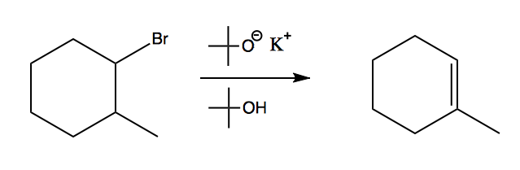
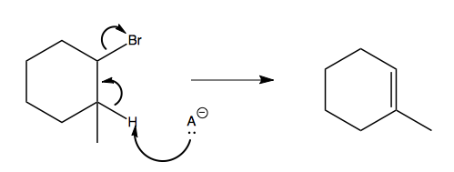

Chapter 5 - Alkenesols
-
Alkenes: An Overview
Properties

• Alkenes can assume two stereoisomeric configurations: cis and trans.
• When the groups are opposite we denote the alkene as trans and then they are on the same side the groups are cis to each other. Note the distinct shape of both stereoisomers.
• Trans is more stable than cis because steric hindrance is minimized within the molecule. There is less electron repulsion between the two trans substituents.

• When there are multiple complex functional groups on an alkene we use the E-Z notation.
• If the dominate groups are opposite each other use E before the name and if they are on the same side we use Z before the molecule name.
• To use E-Z notation, start at the sp2 carbon of the double bond, move outward, and compare the substituents on each carbon.
• Compare the carbons by atomic number until there is a point of difference. The substituent that has the greater atomic number is the dominate group.
-
Alcohol Dehydration
Reaction Overview

• This is called a beta-hydride elimination reaction.
• Alcohols in the presence of heat and acid will generate alkenes via dehydration.
• H3PO4 can also be used as well as other strong acids.
• This reaction follows an E1 mechanism.
Reactivity
• Alcohol Substitution: (slowest) 1° < 2° < 3° (fastest)
Regioselectivity

• In the presence of other functional groups the major product is formed at the most substituted position. This is called Zaitsev’s Rule.Stereoselectivity
• The trans product is preferred because it is most stable.
Mechanism of Action

• This is the E1 mechanism for alcohol dehydration. Notice that it has a carbocation intermediate as the product of step two. This is also the slow step of the reaction.
• In this pathway hydride or methyl shifts can occur in order to achieve a more stable carbocation intermediate.
-
Dehydrohalogenation
Reaction Overview

• Halides can be used to create double bonds via dehydration. A strong base (one with a negative charge) and its conjugate acid are necessary for this type of reaction.
• This reaction follows an E2 mechanism.
• In cyclohexane molecules the halogen and proton to be abstracted must be in the trans configuration. To achieve this ring interconversions might be needed.
Reactivity
• Rate of dehydration by leaving group: (fastest) RI > RBr > RCl >> RF (Slowest)
• RI proceeds the fastest because it has a weak carbon-iodide bond due to the large size of iodide.
Regioselecitivty
• The more substituted double bond that forms from an anti coplanar dehydration is preferred.
Stereoselectivity
• The proton to be abstracted and halogen must but anti or trans to each other.
Mechanism of Action

• This is the E2 pathway. This is a concerted one step reaction. The reaction is bimolecular because two species are involved in the slow step: the base and the halogen.